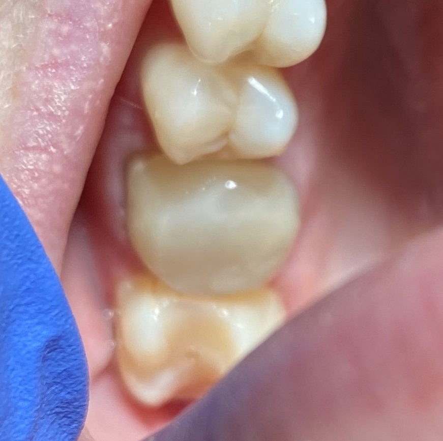

16 Monolithic Zirconia - March 20, 2023
A 41 y/o healthy female attended for a crown on root canal treated 16. The tooth had been retreated endodontically due to crown fracture, secondary caries and subsequent apical infection. The case is inherited from another operator who placed 2 Paraposts, one in the palatal root and the other in distal buccal root.
On examination, the coronal structure was consistent of a mixture of composite resin and half of the previous EMAX crown. Additionally, the pre-op PA revealed a void over mesial buccal orifice, and posts are extending to occlusal surface. The decision of removing all restorations as well as trimming post height was made.
Restoration materials were removed from crown and over mesbuc orifice.
A core was build with GC Gradia Direct Composite resin in increment.
Crown prep was done 2 days later, for a monolithic zirconia crown.
Temporary crown was made with Protemp and cemented.
Permanent crown was inserted by another operator uneventfully.